Free on the App Store · iPhone
The key your computer doesn’t have.
Your iPhone becomes a security key: seal files, sign commits, and approve your AI agents with Face ID.

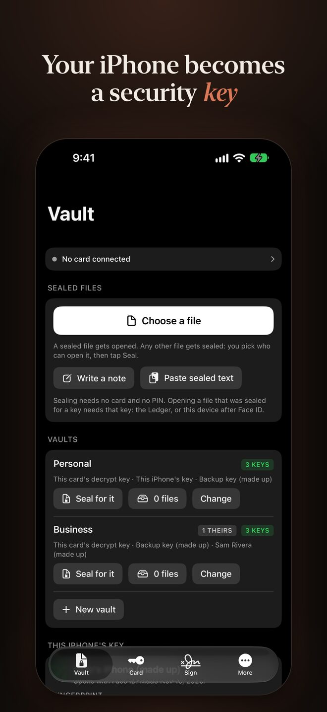
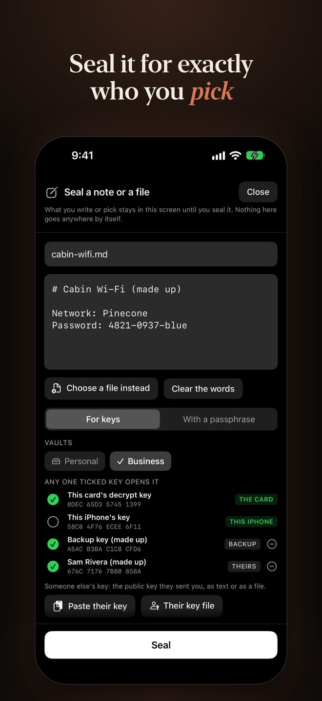
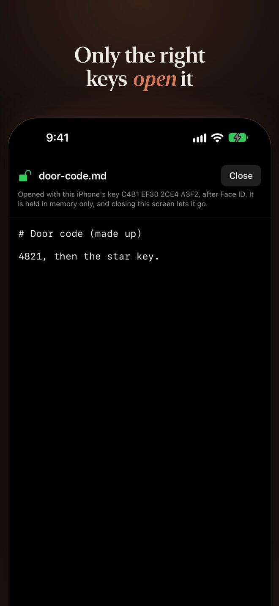
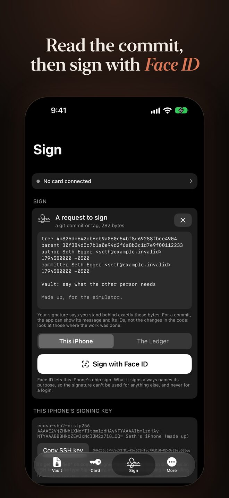
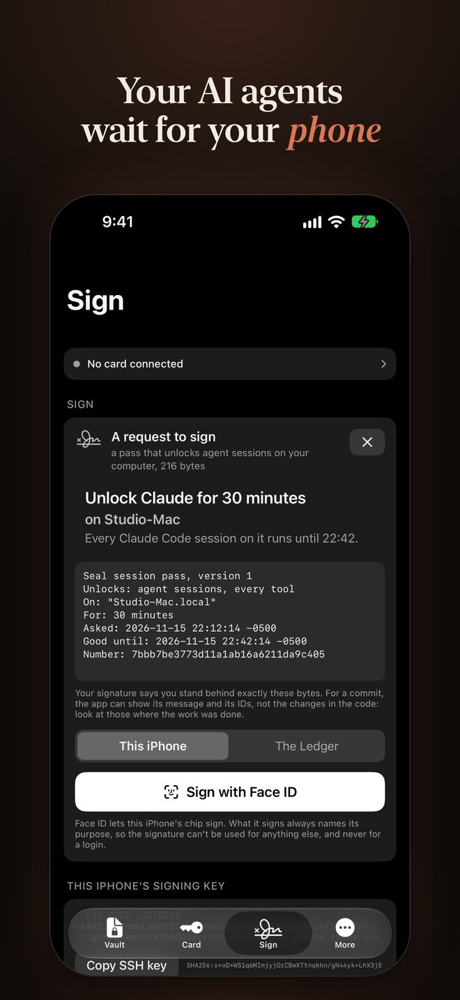
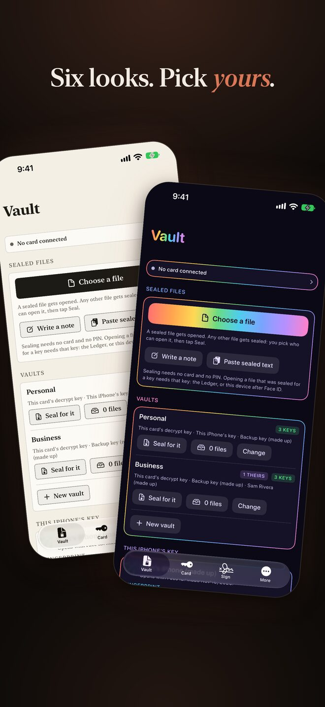
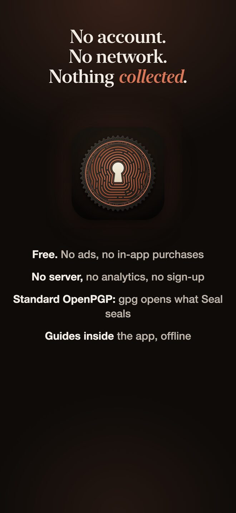
§ 01Vaults and files
Seal it once. Any one of its keys opens it.
A vault is a named set of keys, like Personal or Business. Seal a note or any file for it, and the vault keeps it on your iPhone, still sealed. Send it anywhere: only the vault’s keys open it.

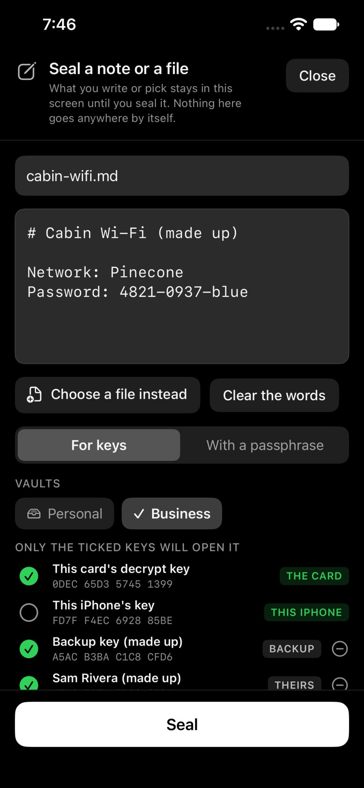
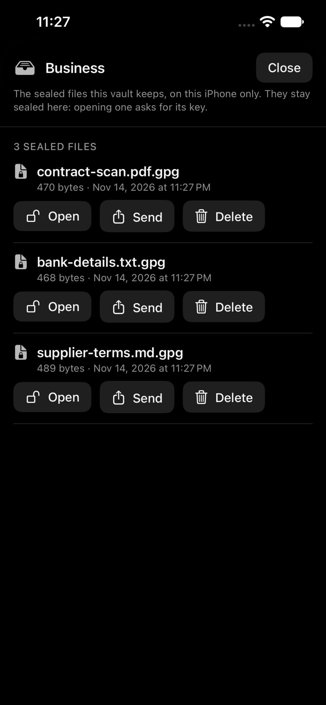
Two doors, not two locks
Each ticked key opens the file on its own. Tick a second key you own, so losing one doesn’t lose the files.
Opened in memory only
An opened file is never written to the disk. Closing the screen, or leaving the app, lets it go.
Kept in Seal’s own space
Not in iCloud Drive or the Files app. If iCloud Backup is on, the files travel in it still sealed.
§ 02The session lock, for AI agents
Your agents wait for your phone.
AI agents now work on your computer for you. Anyone who gets into your computer, or into your account, can talk to them too. Under the session lock, a Claude Code session takes no message and runs no tool until your iPhone signs a pass with Face ID.
# once: trust your phone’s key (Sign page, Copy SSH key) $ seal-gate --setup "$(pbpaste)" # start a locked session $ claude --settings "$(seal-gate settings)" Your message was not taken, and nothing runs. # lock again before the 30 minutes are up $ seal-gate pass drop
- Held. Without a pass, a message is not taken and nothing runs. The request is put on the clipboard.
- Read. On the phone,
Paste a signing request. It names your Mac and when the pass ends. - Signed.
Sign with Face ID, thenCopy the signature. Nothing on the computer can make a pass: the key is in your phone. - Thirty minutes. The session works as usual, with Claude’s own permission questions.
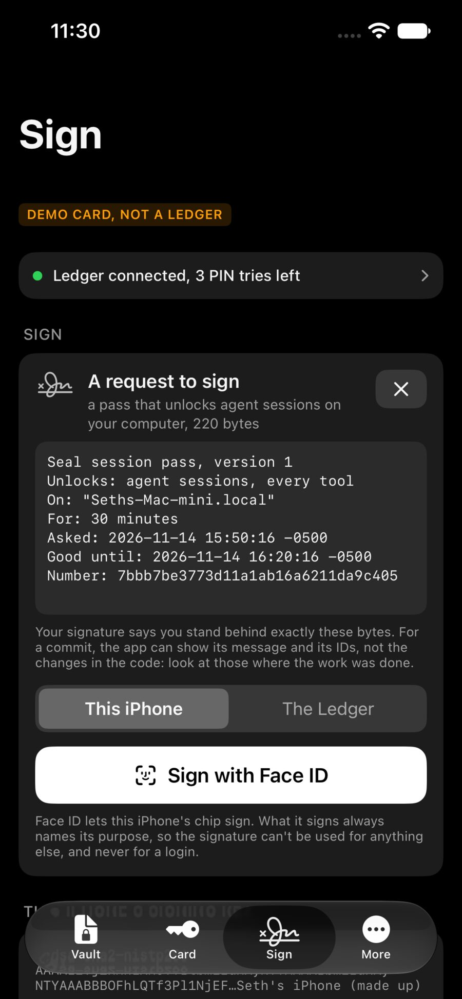
The Mac side is a Claude Code plugin you install in one step, Seal for Mac: the session lock and the commit signer. The lock holds Claude Code sessions on that Mac, and nothing else: read what it does and doesn’t do.
§ 03Signed commits
Commits signed by a key your Mac never holds.
Git can sign commits with an SSH key. With Seal, that key is your iPhone’s: git asks the phone, you read the commit there, and you say yes with Face ID.

# once per repository: this repository’s settings only $ seal-git-sign --setup "$(pbpaste)" $ git commit -S -m "Your message"
- You read it first. The phone shows the commit’s message, its author and its IDs. Look at the changes on the Mac before you sign.
- Checked before git gets it. The Mac checks the signature with ssh-keygen, and only then gives it to git.
- Verified on GitHub. Add the same key to GitHub as a Signing Key, and commits signed this way can show as Verified.
- Every signature names its purpose: a commit, a file, a pass. One made for one can’t be used as another, and never as a login.
§ 04Hardware keys
Already carry a Ledger? Seal reads it.
Plug a Ledger into the iPhone with a USB-C cable, open its OpenPGP app, and its keys work in Seal: seal for it, open with it, sign with it. Seal reads the card. It never writes to it, never changes a PIN, and never makes or deletes a key there.
The Ledger and your iPhone make a good pair: tick both when you seal, and either one opens the file. Lose the phone, and the Ledger still opens everything.
The OpenPGP PIN goes to the card and nowhere else: not saved, not logged.

§ 05Six looks
Six looks, one quiet app.
Open More, then Look, and tap one.
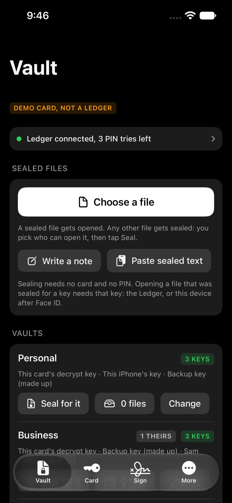
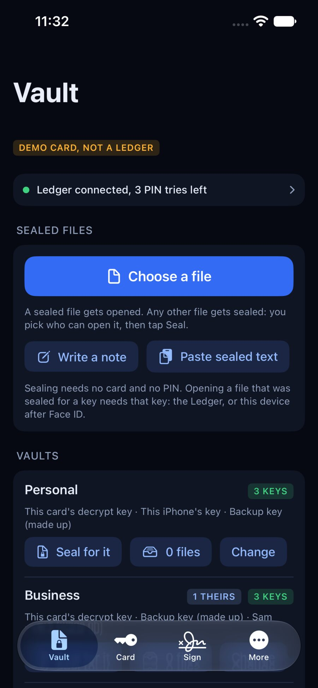
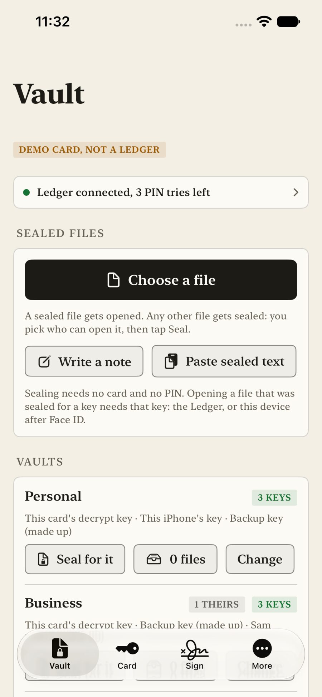
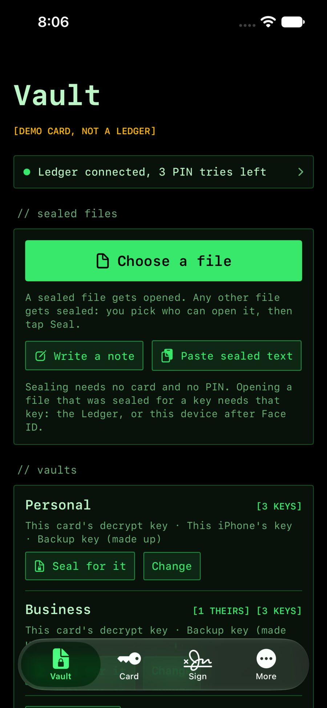
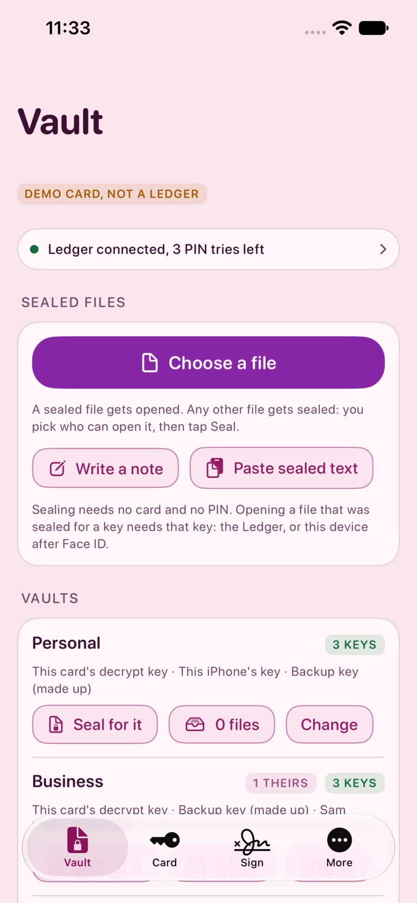
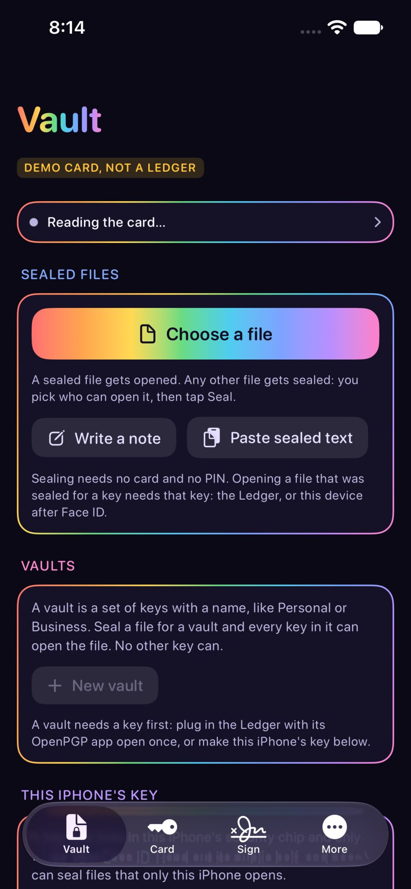
§ 06Guides
Step by step, from your first key.
Short guides with a picture of each screen. The same guides are in the app, under More, Guides, and they work offline.
- 01Start hereSeal is the key your computer doesn’t have. Two minutes to your first key.The four pages · Make this iPhone’s key · Pick a look · What Seal never does · These guides, in the app
- 02Keep files in a vaultA vault is a named set of keys, like Personal or Business. Seal a file for it, and the vault keeps it.Make a vault · Seal something for it · Find it again · Change or delete a vault
- 03Open a sealed fileA file sealed for your key opens with Face ID, or with your Ledger’s PIN.Bring the file in · Open it
- 04Swap keys with someoneTo seal a file for someone, you need their public key. To get files from them, they need yours.Send your public key · Add theirs · Put them in a vault · They don’t have Seal?
- 05Lock your Claude Code sessionsA locked session takes no message and runs no tool until your phone says yes with Face ID.What you need · Pair your phone (once) · Turn the lock on · Turn the lock off · Stuck? · Lost your phone? · Away from the Mac · What it does and doesn’t do
- 06Sign a git commit from your phoneThe key that signs your commits is in your phone, and a commit is signed only after you’ve read it.Set up a repository (once) · Sign a commit · GitHub’s Verified mark · Sign a message you type
- 07Use a LedgerAlready have OpenPGP keys on a Ledger? Seal uses them over USB-C, and never changes them.Connect it · Use its keys · Why use both
- 08Seal and open on a MacSeal speaks OpenPGP, the same as gpg. Files cross between the phone and any computer.Seal on the Mac, open on the phone · Seal on the phone, open on the Mac · A file with a passphrase
- 09QuestionsShort answers to what people ask first.Where are my files? · I ticked two keys. Do I need both to open the file? · What if I lose my iPhone? · What if I set up Face ID again? · Does Seal send anything anywhere? · Does someone need Seal to open what I send? · What can someone see when I’m not looking? · Which hardware keys work?
Seal is on the App Store.
Free, for iPhone. No account to make, nothing to sign up for, no ads.
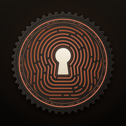
Free on the App StoreSeal · iPhone